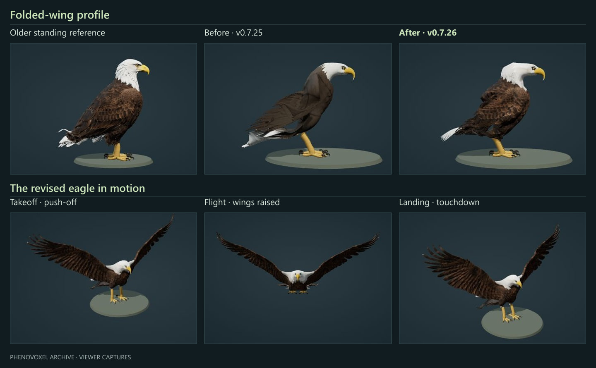

Bald eagle
Haliaeetus leucocephalus · Standing plumage revision · v0.7.26
Open the 3D specimenBefore and after

Feather and body correction
The older standing model supplied the folded silhouette and the layered brown feather pattern. Cross-sections of its surface guided a shape correction for the shoulder, chest and folded wings. The transferred feather pigment lives in a single texture atlas used across the poses. Grab3D standing reference, CC0 1.0.
Twelve layered white tail feathers follow the existing tail joint. The fan narrows in standing and spreads for the landing flare. The modeled count follows bald eagle molt observations. McCollough, 1989.
Movement checks
The same rig carries the model through the crouch, two-foot push-off, downstroke, flare, touchdown and final wing fold. Geometric tests sample clearance above the platform, fixed feet during contact, and the folded end pose. The phase order is evidence-informed. Elapsed time, joint angles and travel are illustrative. Evidence for takeoff and landing.
Sources and reproduction
The shared body derives from Pigcraft’s Bald Eagle Flying Bird Model (CC BY 4.0). Standing-reference shape and pigment derive from Grab3D, with geometry and material adaptation by PhenoVoxel Archive.
Revised shared GLB · Credits, asset checksums and study bounds · Authoring source.
From the source checkout with Node dependencies and Python NumPy, SciPy and Pillow installed, run:
node eagle-authoring-v0726.mjs prepare eagle-work python eagle-scan-transfer-v0726.py eagle-work node eagle-authoring-v0726.mjs pack eagle-work